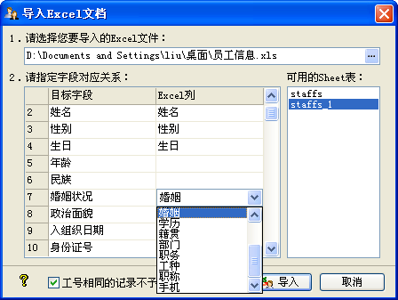

| 数据维护 - 导入Excel文档 |
|
您可以认为此操作为导出Excel文档的逆操作，其前提是需要存在有员工信息的Excel文件，格式请参照您导出的Excel文档，其操作界面如下图示：  您需要选择要导入的Excel文件，然后系统会分析其中的数据，并以其字段与员工档案信息字段相对应。 这里支持模糊的对应方法，如对于婚姻字段，您可以简单地在Excel中设置为[婚姻]，系统会自动尝试去匹配；而与目标字段匹配的Excel列，您可以自由的去设定，没有对应的列则可以留空。 若您选择的Excel文件有多个sheet，则系统会在[可用的Sheet表]处列出，同时会更新其对应字段，您可以选择要导入哪一个sheet表。 当您勾选[工号相同的记录不予导入]时，系统不会导入Excel中存在的与数据中工号相同的记录。 注意：此操作需要Microsoft Excel 2000及其以上版本的支持。若您的计算机中没有安装，则此功能不能使用。 |